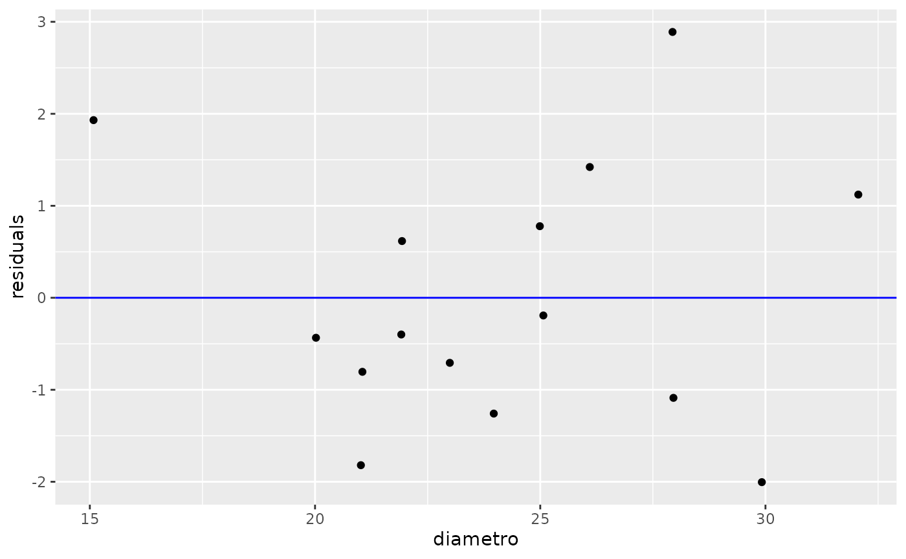
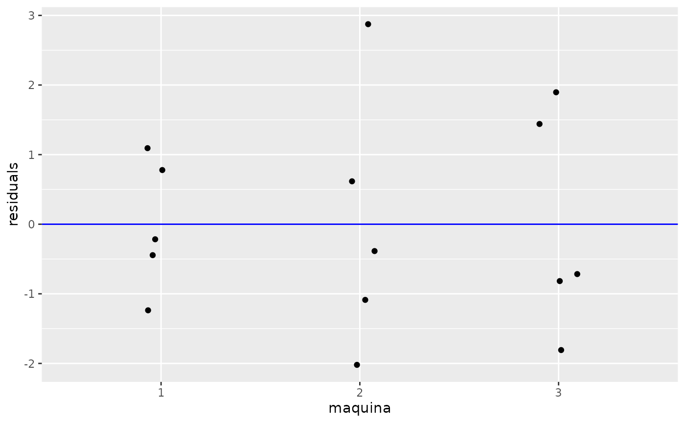

library(planex)
#> Loading required package: dplyr
#>
#> Attaching package: 'dplyr'
#> The following objects are masked from 'package:stats':
#>
#> filter, lag
#> The following objects are masked from 'package:base':
#>
#> intersect, setdiff, setequal, union
#> Loading required package: ggplot2
library(tidyverse)
#> ── Attaching packages ─────────────────────────────────────── tidyverse 1.3.1 ──
#> ✔ tibble 3.1.7 ✔ purrr 0.3.4
#> ✔ tidyr 1.2.0 ✔ stringr 1.4.0
#> ✔ readr 2.1.2 ✔ forcats 0.5.1
#> ── Conflicts ────────────────────────────────────────── tidyverse_conflicts() ──
#> ✖ dplyr::filter() masks stats::filter()
#> ✖ dplyr::lag() masks stats::lag()
data(fibras)
glimpse(fibras)
#> Rows: 15
#> Columns: 3
#> $ maquina <int> 1, 1, 1, 1, 1, 2, 2, 2, 2, 2, 3, 3, 3, 3, 3
#> $ diametro <int> 20, 25, 24, 25, 32, 22, 28, 22, 30, 28, 21, 23, 26, 21, 15
#> $ forca <int> 36, 41, 39, 42, 49, 40, 48, 39, 45, 44, 35, 37, 42, 34, 32
fibras <- fibras %>%
mutate(
maquina = as.factor(maquina)
)
fit <- aov(forca ~ diametro + maquina, data = fibras)
testResiduals(fit)
#>
#> Shapiro-Wilk normality test
#>
#> data: resid
#> W = 0.96159, p-value = 0.7201
#>
#> ------------------------------------------
#> Bartlett test of Homogeneity of Variances:
#> Bartlett's K-squared df p.value
#> maquina 1.548563 2 0.4610348
#>
#> -----------------------------------------------
#> Durbin-Watson Test for Autocorrelated Errors:
#> lag Autocorrelation D-W Statistic p-value
#> 1 -0.03469267 1.93149 0.434
#> Alternative hypothesis: rho != 0
plotResiduals(fit)